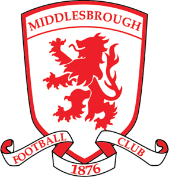
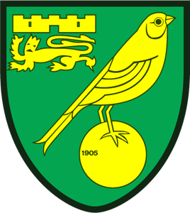
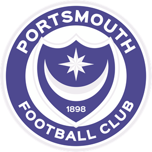
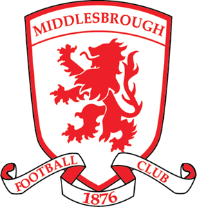
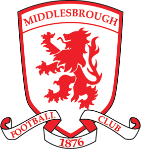
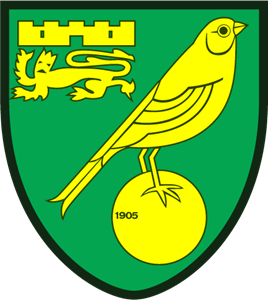
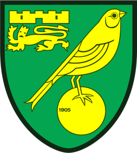
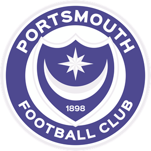
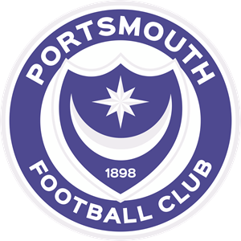

Футбольний сайт
Привіт! Про що саме бажаєте дізнатися?
Новини
Клуби
Трансфери
Англія
АПЛ
Чемпіоншип
Перша Ліга
Друга Ліга
Арсенал
Астон Вілла
Борнмут
Брентфорд
Брайтон
Челсі
Кристал Пелес
Евертон
Фулгем
Іпсвіч
Лестер
Ліверпуль
Манчестер Сіті
Манчестер Юнайтед
Ньюкасл Юнайтед
Ноттінгем форест
Саутгемптон
Тоттенгем
Вест Гем
Вулвергемптон
Блекберн Роверз
Бристоль Сіті
Бернлі
Кардіфф
Ковентрі
Дербі Каунті
Халл Сіті
Лідс
Лутон
Мідлсбро
Міллволл
Норвіч
Оксфорд Юнайтед
Плімут
Портсмут
Престон
Квінз Парк Рейнджерс
Шеффілд Юнайтед
Шеффілд Венсдей
Сток Сіті
Сандерленд
Свонсі
Вотфорд
Вест Бромвіч



Барнслі
Бірмінгем
Блекпул
Болтон
Бристоль Роверс
Бертон
Кембридж Юнайтед
Чарльтон
Кроулі
Ексетер
Хаддерсфілд
Лейтон Орієнт
Лінкольн
Менсфілд
Нортгемптон
Пітерборо
Редінг
Ротергем
Шрусбері
Стівенедж
Стокпорт Каунті
Віган
Рексем
Віком
Аккрингтон
Барроу
Бредфорд Сіті
Бромлі
Карлайл
Челтнем
Честерфілд
Колчестер
Крю
Донкастер
Флітвуд
Гіллінгем
Грімсбі
Харрогейт
Мілтон Кінз Донз
Моркем
Ньюпорт
Ноттс Каунті
Порт Вейл
Солфорд
Свіндон
Транмер
Волсолл
Вімблдон
Бельгія
Вища Бельгійська ліга
Бельгійська ліга 2
Андерлехт
Антверпен
Беєрсхот
Брюгге
Серкль Брюгге
Шарлеруа
Дендер
Генк
Гент
Кортрейк
Левен
Мехелен
Рояль Уніон
Сінт-Трейден
Стандарт
Вестерло
Андерлехт u23
Беверен
Брюгге u23
Дейнзе
Ейпен
Франк Борен
Генк u23
Ла-Лув'єр
Льєж
Льєрс
Локерен-Темсе
Ломмел
Патро Ейсден
РВДМ
Серен Юнайтед
Варегем
Виберіть, що бажаєте переглянути про команду:
Гравці
Опис команди
Трофеї
/arsenal.png)
/aston villa.png)
/bournemouth.png)
/brentford.png)
/brighton.png)
/chelsea.png)
/crystal palace.png)
/everton.png)
/fulham.png)
/ipswich.png)
/leicester.png)
/liverpool.png)
/manchester-city.png)
/manchester-united.png)
/newcastle.png)
/nottingham forest.png)
/sounthampton.png)
/tottenham.png)
/west ham.png)
/wolverhampton.png)
/blackburn rovers.png)
/bristol city.png)
/burnley.png)
/cardiff.png)
/coventry.png)
/derby county.png)
/hull city.png)
/leeds.png)
/luton.png) 

/milwall.png) 

/oxford united.png) 

/preston.png)
/queens park rangers.png)
/sheffield united.png)
/sheffield wednesday.png)
/stoke city.png)
/sunderland.png)
/swansea.png)
/watford.png)
/west bromwich.png)
/barnsley.png)
/birmingham.png)
/blackpool.png)
/bolton.png)
/bristol rovers.png)
/burton.png)
/cambridge united.png)
/charlton.png)
/crawley.png)
/exeter.png)
/huddersfield.png)
/leyton orient.png)
/lincoln.png)
/mansfield.png)
/northampton.png)
/peterbrough.png)
/reading.png)
/rotherham.png)
/shrewsbury.png)
/stevenage.png)
/stockport county.png)
/wigan.png)
/wrexham.png)
/wycombe.png)
/accrington.png)
/barrow.png)
/bradford city.png)
/bromley.png)
/carlisle.png)
/cheltenham.png)
/chesterfield.png)
/colchester.png)
/crewe.png)
/doncaster.png)
/fleetwood.png)
/gillingham.png)
/grimsby.png)
/harrogate.png)
/mc dons.png)
/morecambe.png)
/newport.png)
/notts-county.png)
/port-vale.png)
/salford.png)
/swindon.png)
/tranmere.png)
/walsall.png)
/wimbledon.png)
/anderlecht.png)
/antwerp.png)
/beerschot.png)
/brugge.png)
/cercle-brugge.png)
/charleroi.png)
/dender.png)
/genk.png)
/gent.png)
/kortrijk.png)
/leuven.png)
/mechelen.png)
/royale-union.png)
/sint-truiden.png)
/standard.png)
/westerlo.png)
/anderlecht u23.png)
/beveren.png)
/brugge u23.png)
/deinze.png)
/eupen.png)
/francs-borains.png)
/genk u23.png)
/la-louviere.png)
/liege.png)
/lierse.png)
/lokeren-temse.png)
/lommel.png)
/patro-eisden.png)
/rwdm.png)
/seraing.png)
/waregem.png)